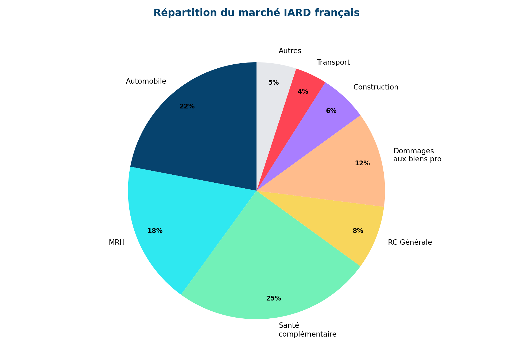
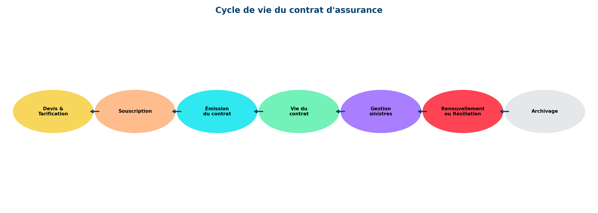

0.0.1 🎯 Objectifs d’apprentissage
À l’issue de ce module, tu seras capable de :
- Classifier les principaux produits d’assurance non-vie par branche
- Décrypter la structure d’un contrat d’assurance
- Distinguer garanties, franchises, plafonds et exclusions
- Comprendre le cycle de vie d’un contrat de la souscription à la résiliation
- Situer les acteurs de la chaîne de valeur assurantielle
📚 Prérequis : Module 1 — Fondements économiques de l’assurance
⏱️ Temps estimé : 2 à 3 heures de lecture active
1 La classification des produits non-vie
1.1 Les grandes branches IARD
L’assurance non-vie (ou IARD — Incendie, Accidents et Risques Divers) couvre l’ensemble des risques matériels et de responsabilité. Le marché se structure en grandes branches :
1.2 Particuliers vs Professionnels
| Segment | Produits phares | Caractéristiques |
|---|---|---|
| Particuliers | Auto, MRH, Santé, GAV | Volume élevé, sinistres fréquents mais modérés |
| Professionnels | RC Pro, Multirisque, Flotte | Risques plus complexes, tarification sur mesure |
| Entreprises | Dommages, RC, D&O, Cyber | Grands risques, courtage, réassurance |
2 Anatomie d’un contrat d’assurance
2.1 Les éléments constitutifs
Un contrat d’assurance se compose de plusieurs pièces :
flowchart TD
A[Contrat d'assurance] --> B[Conditions Générales]
A --> C[Conditions Particulières]
A --> D[Conditions Spéciales]
B --> B1[Définitions, règles communes]
C --> C1[Identité, garanties choisies, primes]
D --> D1[Options, extensions spécifiques]
💡 Point clé
Les Conditions Générales sont identiques pour tous les assurés d’un même produit. Les Conditions Particulières personnalisent le contrat (garanties, franchises, montant de prime). C’est dans les CP que se trouvent les données exploitables en data science.
2.2 Garanties, franchises et exclusions
Les garanties définissent ce qui est couvert :
- Garantie de base : couverture minimale obligatoire (ex : RC auto)
- Garanties optionnelles : extensions choisies par l’assuré (bris de glace, vol, etc.)
Les franchises représentent la part restant à charge de l’assuré :
| Type de franchise | Fonctionnement | Exemple |
|---|---|---|
| Absolue | L’assuré paie toujours ce montant | Franchise 300 € → sinistre 1000 € → indemnité 700 € |
| Relative | En dessous, rien. Au-dessus, tout. | Franchise 300 € → sinistre 200 € → 0 €, sinistre 400 € → 400 € |
| Proportionnelle | % du sinistre à charge | 10% du montant du sinistre |
⚠️ Attention
Les exclusions sont les risques non couverts. Elles peuvent être légales (guerre, nucléaire), conventionnelles (vétusté, usure) ou spécifiques au contrat. En data science, il faut les identifier car elles impactent directement le périmètre d’analyse des sinistres.
3 Le cycle de vie du contrat
3.1 De la souscription à la résiliation
(0.0, 1.0)(0.2, 0.8)(np.float64(0.0), np.float64(1.0), np.float64(0.2), np.float64(0.8))
3.2 Les données générées à chaque étape
Chaque étape du cycle de vie produit des données exploitables :
| Étape | Données clés | Usage data |
|---|---|---|
| Tarification | Variables de risque, segmentation | Modèles de pricing |
| Souscription | Profil assuré, garanties choisies | Analyse du portefeuille |
| Sinistres | Date, nature, coût, réserves | Modèles fréquence/sévérité |
| Résiliation | Motif, ancienneté, historique | Modèles de churn |
4 La chaîne de valeur
4.1 Les acteurs de l’écosystème
flowchart LR
A[👤 Assuré] -->|Prime| B[🏪 Distributeur]
B -->|Contrat| C[🏢 Assureur]
C -->|Cession| D[🏦 Réassureur]
C -->|Sinistre| E[🔍 Expert]
E -->|Rapport| C
C -->|Indemnité| A
📝 Exemple concret
Dans ton expérience chez un courtier, tu as pu observer cette chaîne : le courtier (distributeur) négocie les conditions avec l’assureur, le client souscrit, et en cas de sinistre, un expert évalue les dommages avant indemnisation.
Synthèse
4.1.1 🎯 Les 5 concepts fondamentaux à retenir
- L’IARD couvre les risques matériels et de responsabilité — Auto, MRH, RC Pro, Dommages…
- Le contrat a une structure normée — CG + CP + CS définissent garanties, franchises, exclusions
- Les franchises modulent le risque — Absolue, relative ou proportionnelle
- Le cycle de vie génère des données — Chaque étape est une source de features pour la data science
- La chaîne de valeur est complexe — Assurés, distributeurs, assureurs, réassureurs, experts
Auto-évaluation
Question 1 : Quelle est la différence entre une franchise absolue et relative ?
Réponse : Franchise absolue : l’assuré paie toujours le montant de la franchise (sinistre 1000€, franchise 300€ → indemnité 700€). Franchise relative : si le sinistre est inférieur à la franchise, rien n’est payé. S’il la dépasse, tout est payé (sinistre 200€, franchise 300€ → 0€ ; sinistre 400€ → indemnité 400€).
Question 2 : Quelles données sont générées lors de la phase de tarification ?
Réponse : Variables de risque (âge, zone géographique, historique sinistres, type de bien), segmentation du client, score de risque, prime technique calculée. Ces données alimentent les modèles de pricing GLM et ML.
Question 3 : Pourquoi les exclusions sont-elles importantes en data science assurantielle ?
Réponse : Les exclusions définissent le périmètre réel de couverture. Un sinistre exclu ne génère pas d’indemnisation. En modélisation, il faut s’assurer que les sinistres exclus ne sont pas comptabilisés dans les modèles de fréquence/sévérité, sous peine de biaiser les estimations.
Question 4 : Quel est le rôle du réassureur dans la chaîne de valeur ?
Réponse : Le réassureur est “l’assureur des assureurs”. Il prend en charge une partie des risques de l’assureur (cession) en échange d’une prime de réassurance. Cela permet à l’assureur de se protéger contre les sinistres exceptionnels et de respecter ses exigences de solvabilité.
Glossaire
| Terme | Définition |
|---|---|
| IARD | Incendie, Accidents et Risques Divers — l’ensemble de l’assurance non-vie |
| Franchise | Part du sinistre restant à charge de l’assuré |
| Garantie | Risque couvert par le contrat d’assurance |
| Exclusion | Risque explicitement non couvert |
| Conditions Générales | Clauses communes à tous les contrats d’un même produit |
| Conditions Particulières | Clauses spécifiques à chaque assuré |
| Réassurance | Transfert d’une partie du risque de l’assureur à un réassureur |